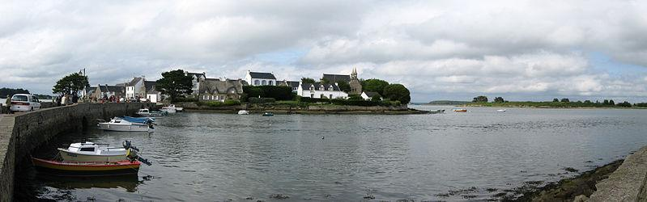

IV
Conversion de Merlin
Merlin's Conversion
Dialecte de Cornouaille

|
Puis, en entier, dans le Barzhaz, 3ème édition, en 1867. "Il serait à désirer que [les chants relatifs à Merlin] qui existent dans la collection de M. de Penguern vissent aussi le jour; et vinssent avec les précieuses découvertes de Gabriel Milin (1822-1895, écrivain de langue bretonne) compléter le cycle poétique de l'Enchanteur breton" ("Notes" des 4 chants "Merlin" p.78 édition de 1867). Selon Luzel et Joseph Loth, cités (P. 389 de son "La Villemarqué") par Francis Gourvil qui se range à leur avis, ce chant mythologique ferait partie de la catégorie des chants inventés . |
Then in "Barzhaz Breizh, 3rd edition, 1867. "It is desirable that the poems extant in the Penguern collection be also edited and published; So that they might, along with Gabriel Milin 's (1822-1895, Breton language author) precious discoveries, complement the Breton cycle of Merlin poetry" (the "Notes" to the 4 Merlin poems, p.78 in the 1867 edition). According to Luzel and Joseph Loth, quoted by Francis Gourvil (p. 389 of his "La Villemarqué"), this mythological song was " invented " by its alleged collector. |
Ton
(la majeur, se terminant sur la dominante mi)
| Français | English |
|---|---|
|
1. Kado marchait dans la forêt,
Agitant son grelot doré, 2. Quand bondit une forme affreuse A la barbe grise et hideuse. 3. Un fantôme dont les deux yeux Semblaient brûler comme du feu. 4. Donc, ce jour-là, Kado, le Saint Rencontrait le Barde Merlin. 5. -Au nom de Dieu, je te l'ordonne, Apprends-moi comment on te nomme. 6.- Quand dans le monde je vivais, J'étais un barde, on m'honorait. 7. Dès mon entrée dans les palais, Les gens en foule jubilaient. 8. Sitôt que résonnait ma harpe, De l'or brillant tombait des arbres; 9. Si les rois du pays m'aimaient; Les rois étrangers me craignaient; 10. Les pauvres gens allaient disant : «Merlin, fais entendre ton chant.» 11. Quant aux Bretons, ils me disaient: « Chante ce qui doit arriver.» 12. Depuis que je vis dans les bois ; Nul ne m'honore plus, ma foi. 13. Loups et sangliers, me voyant, Quand je passe, grincent des dents. 14. Ma harpe est perdue pour jamais ; Les arbres suintant l'or, coupés. 15. Les rois des Bretons sont tous morts, Les étrangers sont les plus forts. 16. Les Bretons cessent d'accourir Vers moi pour savoir l'avenir. 17. On m'appelle Merlin le Fou , On me chasse à coups de cailloux. 18. - Revenez à Dieu, mon cher fou, A ce Dieu qui est mort pour vous. 19. Ce Dieu de vous aura pitié. Qui s'y fie jouit de Sa paix. 20. - En Lui j'ai mis ma confiance. Qu'Il accepte ma repentance! 21. - Que te pardonnent par mes soins Le Père, le Fils, l'Esprit-Saint! 22. - J'exulterai donc grâce à toi Pour l'Homme-Dieu, mon seul vrai Roi! 23. Je glorifierai Sa bonté, Sans bornes pour l'éternité. 24. - Pauvre Merlin, Dieu vous entende! Et que vous protègent ses anges! (Trad. Ch. Souchon (c) 2003) |
1. Kado strode through the deep, dark wood,
And shook his bell under his hood. 2. When a hideous shape came across With a beard as thick as the moss. 3. With eyes that were full of fever And burning like boiling water. 4. Kado, the Saint, had met, this day, Merlin, the Bard vanished away. 5. - In God's name, I give you order,, To tell me who or what you are.- 6.- Once I was a great bard in Gaul, I was acknowledged by all. 7. When I entered a hall or den, I was soon cheered by all men. 8. Whenever my harp set to ring, Bright gold to the branches would cling; 9. The kings of the country loved me; The others feared an enemy; 10. And the poor people used to say: « Sing, Merlin, sing, do not delay! » 11. The Bretons claimed very often: « Sing, Merlin, what is to happen. » 12. Now amidst the forest I dwell. To all that I have said farewell. 13. Wolves and boars I cross on the heath, When I pass by, show me their teeth. 14. My harp is lost. I am forlorn; And the gold oozing trees are shorn. 15. Dead are the kings of Brittany, Alien kings impose tyranny. 16. To me the Bretons say no more: «Sing of what future has in store. » 17. They call me now "Merlin the Fool" . They hurl stones at me, they are cruel.- 18. - Come back to God, my dear, poor Fool, He died for you. Accept His rule. 19. For this God will, aye, pity you. He gives peace to all those who rue.- 20. - In Him I trusted and still trust, He will pardon me. He is just. - 21. - I give you pardon on behalf Of Father, Son and Holy Ghost! - 22. - I will exult and say "amen" To my King, true God and true Man! 23. To praise His mercy I engage For ever and from age to age. 24. - May God hear you, poor, dear Merlin ! And His angels keep you from sin! (Transl. Ch. Souchon (c) 2003) |
Cliquer ici pour lire les textes bretons.
For Breton texts, click here.

|
Saint Kado
Saint Kado est l'un des 440 Saints de Bretagne qui accompagnaient les immigrants bretons au cours des 5ème et 6ème siècles de notre ère. Il est possible qu'en raison de sa situation excentrique, alors que le reste de la Gaule était déjà organisée en diocèses dirigés par des évêques, la religion chrétienne n'était pas encore fermement établie sur la péninsule Armoricaine dont les habitants étaient encore, au moins en partie, des païens. Plusieurs chants et textes bretons mettent en scène cette confrontation. Les nouveaux arrivants nommèrent les paroisses et les monastères qu'ils fondaient d'après leurs chefs religieux, n'hésitant pas à en faire des saints qui, pour la plupart ne sont pas reconnus par Rome. De là une similarité des noms de lieu en Galles, en Cornouailles et en Bretagne: ex. D'après St Kollen: gall. "Llangollen", bret. "Langollen" (lan= monastère). Dans son étude publiée en 1859, "La légende celtique en Irlande, Cambrie et en Bretagne" , La Villemarqué a composé une "légende" autour d'un saint fameux pour chacun de ces trois pays: Saint Patrice (=Patrick), Saint Kadok et saint Hervé. A l'appui du texte consacré à Saint Kadok (ou Kado, ou Cado), il cite le chant ci-dessus. Autres récits de la conversion de Merlin Dans le chapitre IV des "notes" qu'il consacre à la "Conversion de Merlin" dans le Barzhaz de 1867, La Villemarqué indique que ladite conversion "a été chantée par les bardes chrétiens des clans gaéliques, gallois et armoricains...une chose que notre poète omet de dire c'est qu'il périt assassiné comme Orphée". Cette précision avait été apportée dans un autre ouvrage de La Villemarqué, la "Légende celtique en Irlande, Cambrie et en Bretagne", déjà cité, où le présent chant figure en français, page 207 et en breton, page 313, sans les 4 premières strophes, sous le titre "Dialogue entre Saint Kadok et le Barde Merzin ; chant populaire en langue bretonne". Une triple tradition: la tradition galloise relative à la conversion de Merlin est également discutée dans l'ouvrage que La Villemarqué fit paraître en 1861-1862 sous le titre "Myrdhinn ou l'enchanteur Merlin" : La tradition écossaise Pour l' Ecosse , La Villemarqué s'appuie sur un manuscrit en latin conservé au British Museum, la Vie de Saint Kentigern (Vita S. Kentigerni) rédigée, nous dit-il, "par un clerc de l'église de Glasgow qui l'écrivit en l'année 1147, sous la dictée des fidèles de cette église et en se servant en même temps [...] d'anciens documents historiques". Ici encore le texte invoqué semble rebelle à la démonstration à laquelle on prétend le faire servir: c'est l'évêque Kentigern qu'un peuple stupide et borné (stultus et insipiens) disait né d'une vierge et d'un esprit. Il avait le don de prophétie et annonça à ses disciples l'invasion de la Grande Bretagne par des nations païennes. Un jour qu'il marchait dans les bois, il rencontra "un fou, nu et hirsute, un individu privé de toutes les bienfaits de la vie en société, quasiment une bête féroce" (quidam demens, nudus et hirsutus, ab omni solatio mundiali destitutus, quasi quoddam torvum furiale). A la demande de l'évêque, le sauvage se présente : "Je suis chrétien, bien que peu digne d'un si grand qualificatif. Jadis j'étais le devin de Vortigern, celui qu'on appelait Merlin. J'accomplis dans cette solitude ma cruelle destinée. Je suis cause de la mort de ceux qui tombèrent à la bataille livrée entre Lidel et Carvanolow...". Le malheureux, va se laver à une fontaine puis reçoit le saint Sacrement. Après avoir prédit sa propre mort dans l'année, ainsi que celle d'un roi, d'un évêque et d'un comte bretons, Merlin s'en va tout content. L'épisode de l'homme sauvage, appelé Laloecen , se trouve dans le dernier chapitre d'une seconde "Vita Kentigerni" datant de 1171, celle de Jocelin, la première étant celle de Herbert dont il ne reste que 8 chapitres (cf. infra). Ce personnage réapparaît, sous le nom de "Lailoken", au centre d'un texte intitulé par un copiste "Vita Merlini Silvestris" et consigné sur un manuscrit du 15ème siècle connu comme le "Cotton Titus A xix" conservé à la London British Library. La citation latine et l'ensemble du récit ci-dessus figurent aux folios 74r-75v dudit manuscrit où ils précèdent le prologue et les 8 premiers chapitres de la "Vie de Saint Kentigern" de Herbert. L'oeuvre comprend deux parties: la rencontre de Kentigern et de Lailoken; puis les démélés de ce dernier avec le "petit roi" (regulus) Meldred qui le retient prisonnier à Dunmeller. L'équivalence de Lailoken et de Merlin n'échappe pas à l'auteur qui s'en explique par deux fois: On ne peut pas ne pas être frappé par la ressemblance du présent texte du Bazhaz avec ce Merlin Sylvestre . La Villemarqué aurait-il, une fois de plus, cédé à la tentation d'imiter sans le dire un modèle qu'il a tout au moins la franchise de citer dans ses commentaires? La tradition bretonne Pour la Bretagne , la conversion de l'homme des bois est confiée à Saint Kado et la référence est le présent chant, d'origine inconnue, amputé de ses quatre premières strophes. La clochette est évoquée page 78 de l'essai: "Au bruit d'une clochette que le saint agite en traversant les bois, pour écarter à la fois les mauvais esprits(?) et les animaux dangereux, le vieux Merlin s'éveille et s'enfuit. Les "notes" annexées au cycle Merlin dans le Barzhaz de 1867, évoquent les "précieuses découvertes" de Gabriel Milin . Il s'agit de la communication de ce dernier à la revue "Gwerin,1" en 1856, puis au "Bulletin de la Société académique de Brest" en date du 31 janvier 1864 dans laquelle celui-ci reproduit le chant du Barzhaz Merlin au Berceau (déjà publié par La Villemarqué en 1858, 1861 et 1862 dans "Le Merveilleux au moven-âge: l'enchanteur Merlin", puis "Myrdhinn ou l'enchanteur Merlin"). Milin accompagnait ce texte d'une nouvelle version de Yannig Skolan" , intitulée "Iann-es-Kolmwenn". Il y affirme que ce nom qui signifie "Jean né de la colombe blanche" était le nom de baptême de Merlin, rappelant son engendrement miraculeux, décrit dans "Merlin au Berceau". "Marzin était le nom donné à tout être merveilleux, un nom commun plus que patronymique" et "Taliesin prétendait avoir été 'Marzin' en tant qu'esprit". Pour obtenir le pardon de sa mère qui représente l'Eglise, Merlin-Iannik se fait accompagner de son saint patron, qui est, tout naturellement, Saint Colomban et non Saint Kado. La Villemarqué admet que le pénitent soit Merlin dans la ballade galloise, mais non dans la bretonne. La mystérieuse clochette Dans son "Myrdhinn", La Villemarqué ne donne pas de version irlandaise de la conversion de Merlin. Et pourtant, une raison plus logique de la présence de la clochette et du rôle qu'elle joua dans cette rencontre est donnée dans un document irlandais que, visiblement, La Villemarqué ne connaissait pas. Il s'agit de l'histoire de Suibhne, Sweeney , le "Myrddin irlandais", telle qu'elle nous est rapportée par des manuscrits datant au plus tôt de 1629 (deux d'entre eux sont conservés à la Royal Irish Academy à Dublin et le troisième à la Bibliothèque Royale de Bruxelles). On y voit Saint Ronan délimitant les emprises de l'église de Cell Luinne en agitant une clochette, accomplissant un rite que les Bretons appellent Troménie , à savoir la consécration d'un territoire entourant une église comme asile placé sous la protection de son saint patron. Il provoque ainsi la colère du roi de la région. Celui-ci, qui n'est autre que Sweeney, se précipite sur les lieux et, dans sa hâte, oublie de se vêtir. C'est alors qu'il commet une des fautes imputée ailleurs, comme on l'a vu, à Yannik Skolan : il noie le psautier de Ronan en le jetant dans un lac. Mais le lendemain une loutre qui vivait dans ce lac rapporta le psautier intact à son propriétaire, qui conforté par ce miracle, maudit Suibhne, le vouant à errer nu toute sa vie et à mourir frappé par une lance. Dans le prologue de "La Légende Celtique..." (1859, page V), il est bien question de la clochette d'un saint dont la troupe de théâtre d'un village breton célèbre les exploits prodigieux, mais il s'agit cette fois de Saint Patrick. Le nom de Sweeney, n'apparaît jamais, me semble-t-il, sous la plume de La Villemarqué. Non plus d'ailleurs que celui de son équivalent écossais, Lailoken qui désigne dans certains textes, le personnage sylvestre rencontré par Saint Kentigern. Merlin et Myrddin chez La Villemarqué En 1839 La Villemarqué commençait l'"argument" introductif de ses 2 poèmes sur Merlin par l'affirmation "Deux bardes ont porté le nom de Merlin: l'un eut pour mère une vestale et pour père selon Nennius [qui commence pourtant à le présenter comme né d'une vierge], un consul romain, et vécut au 5ème siècle sous le règne d'Emrys-Aurel. L'autre...nous apprend lui-même qu'ayant...tué involontairement son neveu à la bataille d'Arderyz [Arfderydd] où il portait le collier d'or [des princes],...il perdit la raison, s'exila du monde et se retira dans la vallée de Celydon (vers 577)." Cette conception était conforme à une des "triades galloises" de la peu fiable "Myvyrian Archaeology": "Trois principaux bardes de l'île de Bretagne, Merddin Emrys [=Merlin Ambroise], Merddin fils de Morvryn, Taliesin chef des bardes." Vingt-huit ans plus tard, quand il publie une nouvelle édition du Barzhaz enrichie de deux nouveaux chants sur le Merlin armoricain ,"Merlin au berceau" et la présente "Conversion", il corrige comme suit: "On a cru longtemps que deux bardes ont porté le nom de Merlin...Aujourd'hui les critiques s'accordent à voir dans ce personnage le héros unique d'une triple tradition où il apparaît comme un être mythologique, historique et légendaire. Qu'il me soit permis de renvoyer le lecteur, pour les preuves, au livre que j'ai écrit sous le titre de "Myrddin ou l'enchanteur Merlin, son histoire, ses œuvres, son influence". Le livre en question parut d'abord en 1858 sous le titre "Le merveilleux au moyen-âge", puis sous le titre indiqué ci-avant en 1861. Chrétienté et paganisme Alors que le présent chant raconte le retour à la foi d'un chrétien chez qui elle s'était attiédie, le titre français retenu, "La conversion de Merlin", sous-entend que Merlin était un païen qui fut converti à la foi chrétienne. Ce faisant La Villemarqué trahit son personnage, comme le firent plusieurs savants qui s'étaient également penchés sur cette énigmatique figure. L'écrivain écossais William Forbes Skene (1809-1892) localisa de façon convaincante le site de la btaille d'Arfderydd à Carwinley, qu'il comprenait comme un ancien "Caer-Gwenddolau", non loin du confluent de l'Esk et de la Liddel, à la limite nord d'Arthuret, une paroisse elle-même située au nord de Carlisle. Il voyait en Arthuret l'ancienne "Arfderydd". C'est lui également qui identifia l'adversaire principal de Gwenddolau comme étant le roi Rydderch Hael. Il présenta un mémoire dans ce sens devant la Société des Paléographes Ecossais en 1865. On peut supposer que La Villemarqué connaissait ses travaux , puisqu'il supprima le passage qui suit de l'"Argument" introductif des poèmes de Merlin dans l'édition du Barzhaz de 1867: "Quelques antiquaires anglais, frappés de ces bizarreries, et n’ayant pu, d’ailleurs, parvenir à trouver de lieu appelé Arderiz (Arfderydd), ont déclaré que la bataille de ce nom est imaginaire et qu’il faut y voir un mythe et des allusions dont nous avons perdu la clef." Partant de ces découvertes, W.F. Skenes échafauda une théorie selon laquelle Gwenddolau était un roi païen hostile au progès du Christianisme, ce qui lui valut d'être attaqué par une armée chrétienne conduite par Rhydderch. Selon lui deux Triades contenaient des allusions à la foi païenne de ce Prince: Chrétienté et Druidisme Ce point de vue qui n'est aucunement corroboré par les sources dont nous disposons fut repris, après lui, par d'autres commentateurs. La Villemarqué fut l'un d'eux: dans sa Notice pour le Comité Historique de l'Académie il présente "Merlin le Devin" comme un druide (fort au courant, semble-t-il, de l'"Histoire Naturelle" de Pline). L'idée selon laquelle Arfderydd fut une bataille entre des factions religieuses opposées est toujours acceptée bar des critiques contemporains tels que Nikolaï Tolstoy dans sa "Quête de Merlin" (1985) où il assure que les Bretons du Nord du début du 7ème siècle furent plus rétifs à accepter la religion romaine que leurs frères de Cambrie. Pourtant la vision romantique, propagée par la Saga Ossianique , d'un paganisme celte structuré par les druides de l'ère pré-romaine à la fois en Gaule, en Bretagne insulaire et en Irlande, ne va pas de soi, tant s'en faut. Bien que César indique que les druides de Gaule étaient en relation avec ceux de l'île de Bretagne, ce qui est confirmé par Tacite qui raconte le destruction d'un important foyer druidique sur l'île d'Anglesey en 61 après J.-C., rien n'indique l'existence d'une organisation druidique présente dans toutes les régions peuplées de Celtes et comparable au réseau international qu'allait constituer après elle le clergé chrétien. En dehors de ces mentions littéraires, les druides ne se trouvent associés à aucune découverte archéologique, de même que César n'indique pas qu'ils aient joué un rôle quelconque dans la Guerre des Gaules. Même si le mot "druide" (par exemple, sous sa forme galloise "dryw") refait surface dans certains récits du haut moyen-âge rédigés par les moines irlandais et brittoniques, il désigne des sorciers et des devins et non un ordre de prêtres, organisé politiquement et puissant comme dans les temps anciens. L'usage abusif du mot "druide" au lieu de "sorcier" ou "magicien" dans les traductions anglaises ou françaises du 19ème siècle, ou même plus récentes peut avoir contribué à cette représentation erronée d'un Myrddin/Merlin, druide en chef attaché à la personne du roi Gwenddolau, et, comme l'écrit Skene, Une autre tendance moderne voit dans les saints celtiques eux-mêmes (Patrice, Columba, Kentigern, Brigitte, Ronan, Cado...) des druides christianisés opposés au catholicisme romain. Même si ce sont des moines de Grande-Bretagne et d'Irlande, qui nous ont conservé le souvenir des anciens dieux et de l'au-delà celtiques, outre d'innombrables textes historiques ou littéraires classiques, même si toutes les croyances dans les divinités païennes invoquées en matière de guérison ou de protection n'ont pas cessé immédiatement d'avoir cours, les structures organisées héritées du paganisme n'ont pas résisté aux assauts de la nouvelle religion. Il n'y a donc pas lieu de croire que Gwenddolau n'ait pas été un roi chrétien, tout comme son adversaire Rhydderch. Il aurait difficilement toléré la présence d'un prêtre païen dans son royaume et encore moins dans son entourage proche. Ni de douter de la sincérité de la profession de foi chrétienne qui s'exprime dans le poème de Myrddin "Yr Afalennau" ci-après et que l'on retrouve dans toutes les prières de pénitents classiques: "Hélas, Jésus, pourquoi ne suis-je mort avant Que le fils de Gwenddydd de ma main ne périsse? et "O, Seigneur des Armées(Cohortes), ouvre-moi ton séjour! Deux autres poèmes de Myrddin ("Cyfoes" et "Peirian Vaban") expriment les mêmes sentiments chrétiens. Les conceptions les plus récentes (en 2016!) Une conception parfaitement plausible du personnage de Merlin est celle que présente l'historien Tim Clarkson dans son "Merlin d'Ecosse": Le plus ancien texte (si l'on excepte un vers dont l'authenticité fait débat dans le poème "Y Gododdin") mentionnant Myrddhin est la "Prophétie de (Grande) Bretagne", Armes Prydain, qui date du 10ème siècle. On lui attribue cinq autres poèmes que l'on trouve disséminés dans 6 manuscrits, (outre la moderne "Archéologie de Galles de Myvyr") ou paraphrasés par Geoffroy de Monmouth dans sa "Vita Merlini". Dans l'un d'eux, noté dans le "Livre rouge de Hergest" datant de 1400, il dialogue avec un autre poète-prophète: Taliesin. "Merlinisation" d'Ambroise et "Arthurisation" de Merlin Dans la source principale qu'utilise Geoffroy de Monmouth, l'"Historia Brittonum" rédigée 3 siècles plus tôt par Nennius, l'enfant sans père que l'on présente à Vortigern, le malheureux constructeur de tour, s'appelait Ambroise. Dans son "Histoire des rois de Bretagne", Geoffroy l'appelle Merlin et se contente de signaler qu'il "s'appelait aussi Ambroise". Ce faisant, il opère la synthèse entre quatre thèmes repris par La Villemarqué: |
Saint Kado
Saint Kado is one of the over 400 Saints of Brittany who came along with the Briton settlers in the 5th and 6th century AD. Due to its remote situation it is plausible that, while the rest of Gaul was already organized in dioceses led by bishops, the Christian faith was not yet firmly established in the Armorican Peninsula and that its inhabitants still were at least partly heathen. This song could be one of the many allegories of this confrontation. The newcomers named the parishes and monasteries they founded after their religious leaders, extolling them as saints whom the Church of Rome mostly ignore. Hence a similarity of place names in Wales, Cornwall and Brittany (ex: after St Kollen, Welsh: "Llangollen", Bret: "Langollen" lan=llan=monastery...) In his study "Celtic Legend in Ireland, Wales and Brittany" , La Villemarqué composed a legend for each of the three countries: Saint Patrice (=Patrick), Saint Kadok, Saint Hervé. As an illustration of the text dedicated to Saint Kadok (or Kado, or Cado), he quotes the song above. Other narratives of Merlin's conversion In chapter IV of the "notes" concerning the "Conversion of Merlin" in the "Barzhaz" of 1867, La Villemarqué states that Merlin's conversion "was sung by Christian bards from Ireland, Wales and Brittany...but our bard omits to mention that his hero perished murdered like Orpheus". This precision was given in the aforesaid book by La Villemarqué, "Celtic Legend in Ireland, Wales and Brittany", where the present song is printed in French on page 207 and in Breton on page 313, without the first four stanzas under the heading "A dialogue between Saint Kadok and the Bard Merzin ; a folk song in Breton language". A threefold tardition: the Welsh tradition concerning Merlin's conversion is also addressed in the study published by La Villemarqué in 1861-1862, titled " Myrdhinn or the Enchanter Merlin" : In Wales the conversion is performed by Saint Columba (or Colm Cille, 521 - 597). His dialogue with Merlin, as worked out by La Villemarqué, is practically identical with the dialogue between Yannick Scolan and his mother. A note reveals that the common source for the two pieces is, via the 1st Part of the "Myvyrian Archaeology", the obscure 13th century Welsh dialogue in the Black Book of Carmathen. But in the present case, as La Villemarqué puts it, Saint Columba is Iscolan, the man clad in black riding on a black horse. Not he, but the nameless one he is speaking to, blames himself for having burnt the church, stolen the cows and drowned the book. The rudimentary punctuation in the ms would make this interpretation almost plausible, but for the fact that there is, in this text mentioning the straight of Bangor, no hint, whatsoever, at Merlin or the Caledonian Wood. Iscolan defines himself as a weak-minded man, but La Villemarqué who is bent on making of him a confessor and not a penitent, translates, in his notes to the song "Yannick Scolan", the phrase "uscawin i puill iscodic" as "the quick-minded scholar", whereas Welsh sources interpret it as "whose weak reason is clouded"! The Scottish tradition The Scottish version is based on a Latin MS kept at the British Museum, The Life of Saint Kentigern (Vita S. Kentigerni), allegedly taken down "by a cleric of Glasgow Church, in the year 1147, from the dictation of his flock, while elaborating on old historic documents." Here again the text called upon seems to be reluctant to prop up a dubious demonstration: it is Bishop Kentigern whom a stupid and short-sighted (stultus and insipiens) populace considered as the child of a virgin and a sprite. He had a gift for soothsaying and had announced his adherents the invasion of Britain by heathen tribes. He was oncewalking in the woods and encountered a "naked, hairy madman, lacking all amenities life in society offers, practically a wild beast" (quidam demens, nudus et hirsutus, ab omni solatio mundiali destitutus, quasi quoddam torvum furiale). At the bishop's request, the wild man introduced himself: "I am a Christian, though unworthy of so dignified a title. In former times I was King Vortigern's soothsayer. I am serving in this godforsaken place my cruel punishment. I am the one who brought death to all those who fell at the battle fought between Lidel and Carvanolow..." The unfortunate man washed at a nearby source, then accepted the Holy sacrament. After he had foresaid his own death and the death of a king, a bishop and an earl of Brittany before the end of the year, Merlin resumed his walk and he was satisfied. The story of the "Wilde Man" called Laloecen , is found, in fact, in the last chapter of a second "Vita Kentigerni" composed in 1171, known as "Jocelin's Vita", the first one being the "Herbertian Vita" of which only 8 chapters are preserved (see below). This character reappears as "Lailoken", a protagonist in an essay titled "Vita Merlini Silvestris" recorded in a 15th century ms known as "Cotton Titus A xix" kept in the London British Library. The Latin quotation and the whole above narrative are on folios 74r-75v of the said ms where they precede the prologue and first 8 chapters of the Herbertian "Life of Saint Kentigern". It is a work in two parts: the encounter of Kentigern and Lailoken; then the dealings of Lailoken with the "kinglet" (regulus) Meldred by whom he is kept prisonner at Dunmeller Fort. The author was aware of the equivalence of Lailoken with Merlin. There are two references to it in the narrative: "Certain people say that [Lailoken] was "Merlynus". Then, "Pierced by a stake and having endured stoning and drowning, "Merlinus" [hitherto called "Lailoken"] is said to have undergone a threefold death" . Which demonstrates that the author of this "Vita Merlini Silvestris" was familiar with the works of Geoffrey of Monmouth. There is a striking likeness between the Barzhaz poem at hand and the "Vita Merlini sylvestris" . Did La Villemarqué again indulge in an unavowed pastiche of a model which he is, however, frank enough to overtly quote in his comments? The Breton tradition As for Brittany , it is Saint Kado who is credited with the conversion of the "wylde man" and this is documented in La Villemarqué's pamphlet by the present song, whose origin is not ascertained, reduced by its first four stanzas. The bell is mentioned on page 78 of the essay: "On hearing the ring of the bell that the saint was swinging while walking through the woods, to scare away bad spirits (?) and wild beasts, old Merlin woke up and took to flight. The "notes" appended to the "Merlin" cycle in the Barzhaz issue of 1867, mention Gabriel Milin 's "precious discoveries". It is a hint at the latter's contribution to the review "Gwerin,1" in 1856, then to the "Bulletin de la Société académique de Brest" dated 31st January 1864, including the Barzhaz song Merlin in His Cradle (already published by La Villemarqué in 1858, 1861 and 1862 in "The supernatural in Middle Ages: Enchanter Merlin", then in "Myrdhinn or Enchanter Merlin"). Milin attached this text to a new version of Yannig Skolan" , titled "Iann-es-Kolmwenn". He maintained that this name, meaning "John born of the White Dove", was Merlin's Christian name, recalling his miraculous begetting as recounted in "Merlin in his Cradle". "Marzhin was the name given to any supernatural being, more a common noun than a patronymic name" and "Taliesin claimed to have been 'Marzhin' when he was a spirit". To gain the pardon of his mother who represents the Church, Marzhin-Iannik is escorted by his holy patron, who is, in accordance with his name, Saint Colomban , not Saint Kado. La Villemarqué admits that the penitent might be Merlin in the Welsh ballad, but not in the Breton gwerz. The mysterious bell In his "Myrdhinn", La Villemarqué omits the Irish version of the conversion tale. And yet, a far more logical explanation for this curious contraption and the part it played in the story is given in an Irish document that the author evidently didn't know. It is the tale of Suibhne, Sweeney , the "Irish Myrddin", as told in manuscripts dating at the earliest from 1629 (two of them are kept at the Royal Irish Academy in Dublin and the third at the Royal Library in Brussels). It shows us Saint Ronan marking out a church named Cell Luinne, by swinging a bell. He was, thus, performing what the Bretons call a Troménie , i.e. solemnly consecrating the precincts of the church where immunity was granted on behalf of its patron saint. This aroused the ire of the local king, Suibhne, (Sweeney) , who "set out stark-naked to drive the cleric from the church". Then he committed an offence ascribed by other tales to Yannik Skolan : he took up Ronan's psalter and cast it into the nearby lake, so that it was drowned therein. But on the next morning, an otter that was in the lake came to Ronan with the psalter, "and neither line nor letter of it was injured". Comforted by this miracle, Ronan cursed Suibhne, that he might ever be, naked, wandering and flying throughout the world until death from a spear-point would carry him off. In the prologue to the "Celtic Legend in Ireland, Wales and Brittany" (1859), page V, mention is made of a bell swung by a holly man, in a theatre play performed in a Breton village to celebrate his wonderful deeds, but his name is Saint Patrick (Sant Padrig) of Ireland. The name Sweeney never appears, I take it, in La Villemarqué's writings. Nor does the name of his Scottish counterpart, Lailoken, as the sylvan man is called in some narratives of his encounter with Saint Kentigern. Merlin and Myrddin in La Villemarqué's poems In 1839 La Villemarqué Introduced his two poems on Merlin with an "argument" where he stated: "Two bards were known by the name 'Merlin": one was a vestal's son and his father was, so says Nennius [who at first considered him born by a virgin], a Roman consul. Ha lived in the 5th century, in the reign of Emrys-Aurel. The other... informs us that...having killed by accident the son of his sister at the battle of Arderyz [Arfderydd], where he wore a golden necklace [one of a prince's insignia]... he went mad, withdraw from the world and lived henceforth in Celydon valley (ca 577)." This conception was consistent with one of the "Welsh Triads" he found in the somewhat spurious "Myvyrian Archaeology": "Three main bards of the Isle of Britain, Merddin Emrys [Merlin Ambrose], Merddin son of Morvryn, Taliesin chief of bards". Twenty-eight years later, when he issued the third and last version of the Barzhaz enriched with two new Merlin songs, "Merlin in his Cradle" and the present "Merlin's Conversion", he amended his text as follows: "It was long assumed that two bards wore the name of Merlin...Nowadays critics agree to see in this figure the sole hero of a triple tradition who appears as a mythological, historical and legendary character. May I refer the reader for an explanation to my own book "Myrddin or Enchanter Merlin, his story, his works and his influence". The book he mentions was first published in 1858 as "The supernatural in Middle Ages", then, under the aforesaid title, in 1861. Christianity and Paganism Though the present song tells us of the return to faith of a weak believer, rather than the conversion of a heathen, the French title chosen by la Villemarqué is "Merlin's conversion". Herewith he misrepresents his models, as did before him several antiquarians who investigated the same topic. The Scottish historian William Forbes Skene (1809-1892) pinpointed, in a very plausible way, the site of the battle field of Arfderydd at Carwinley, interpreted as "Caer-Gwenddolau", near the confluence of the rivers Esk and Liddel, on the northern boundary of Arthuret, a parish north of Carlisle in which he recognized the place name "Arfderydd". He also identified Gwenddolau's main adversary as Rhydderch Hael. He presented his paper to the Society of the Antiquaries of Scotland in 1865. La Villemarqué was possibly aware of these views , since he removed from the "Argument" introducing the Merlin poems in the 1867 Barzhaz edition, the sentence: "A few English antiquaries, puzzled by these oddities which they were unable to connect to any place name sounding like "Arderiz" (Arfderydd), claimed that it was a fancy name , and the whole story a myth the clue to which was lost." Further to these discoveries, W.F. Skenes set forth a theory to the effect that Gwenddolau was a heathen king who opposed the advance of Christianity, prompting a Christian force led by Rhydderch to march against him. He took the view that this Prince's paganism was hinted at in two Triads: Christianity and Druidism These views, that are by no means supported by available sources, were taken up by later commentators: La Villemarqué was one of them: in the "Notice intended for the Historical Committee" he presents "Merlin the Seer" as a Druid (who apparently knew by heart Pliny's "Natural History"). The notion of Arfderydd being a battle fought between two opposite religious factions is still accepted by modern critics like Nikolai Tolstoy in his "Quest for Merlin" (1985) who argued that the Northern Britons in the early 7th century were less receptive to the faith of Rome than their Southern brethren. Now the romanticised association of Celtic paganism with the druids of Pre-Roman age in Gaul, Britain and Ireland, popularised by the spurious Ossian saga , is far from evident. Though Ceasar states that Gallian druids were thought to be originated from the isle of Britain, which is confirmed by Tacitus' account of the destruction of a major druidical centre on Anglesey in 61 AD, there is no indication that druids were a formal institution, present in every Celtic area, like the subsequent Christian international priesthood. Apart from these literary mentions, the druids are positively associated with no archaeological records, as they are not reported by Ceasar to have played any part in the Gallic wars. Even if the word "druid" (for instance, in the Welsh form "dryw") reappears in some Dark-Age accounts written by Irish and British Christian monks, it is applied to sorcerers and seers, not to a politically organized, powerful caste or order of priests of earlier times. Unwarranted use of the word "druid", instead of "wizard" or "magician", in English or French 19th century or more recent translations may also have led to such misrepresentations, as Myrddin/Merlin being chief druid to king Gwenddolau, Another related modern misconception is viewing the Celtic Saints (Patrick, Columba, Kentigern, Brigit, Ronan, Kado...) themselves as Christianized druids opposed to Roman Catholicism. Even if Christian writers preserved in British and Irish monasteries the stories about old gods and Celtic Otherworld, as they did with classical historical or literary works of value, and even if references to pagan creeds or deities associated, in particular, with healing or protection did not disappear at once, structured organisations of paganism did not survive the onslaught of the new religion. Therefore there is no reason to consider Gwenddolau as anything else as a Christian king (like his adversary Rhydderch), who would hardly have tolerated a pagan priest in his kingdom and, still less, in his near environment. Nor is there any reason to question the sincerity of the Christian beliefs expressed in Myrddin's below poem "Yr Afalennau", that are part of the classical prayer of a penitent sinner: "Christ! That my end has not come Before the killing of Gwendydd's son was upon my hands! and "May I be received into bliss by the Lord of Hosts!" Two other Myrddin poems ("Cyfoesi" and "Peirian Vaban") also express similar Christian sentiments. Most recent conceptions (in 2016!) A thoroughly plausible view of the Merlin character is suggested by the historian Tim Clarkson in his "Scotland's Merlin": The oldest text mentioning Myrddin (barring a questionable verse in one of the two existing versions of 'Y Gododdin') is the Welsh "Prophecy of Britain", Armes Prydein Fawr, dating from the 10th century. Five other poems ascribed to him are interspersed in 6 MSs, (as well as in the modern "Myvyrian Archaeology of Wales"), or paraphrased by Geoffrey of Monmouth in his "Vita Merlini". In one of these pieces, included in the "Red Book of Hergest" (written in 1400), he converses with another prophet-poet Taliesin. "Merlinization" of Ambrose and "Arthurization" of Merlin In the main source used by Geoffrey of Monmouth, the "Historia Brittonum", composed three centuries earlier by Nennius, the fatherless boy whom his messengers bring to Vortigern, the unfortunate tower constructor, is named Ambrose. In his "History of the Kings of Britain" Geoffrey names him "Merlin" and adds "who was also known as Ambrose". Herewith he carries out the synthesis of four themes taken up by La Villemarqué: |
Yr Afalennau - An Avallened
Les pommiers - The Apple Trees
(Extraits du "Livre Noir de Carmarthen" - Excerpts from the "Black Book of Carmarthen")
|
...
5. Pommier doux, tu t'élèves dans cette clairière, Me cachant à la vue des hommes de Rhydderch, Bien qu'autour de ton tronc leurs pas tassent la terre. Et leurs rangs indomptés affluent en quantités. Gwenddydd ne m'aime pas et répugne à me voir; Le plus puissant vassal de Rhydderch me déteste: J'ai dépouillé son fils; j'ai dépouillé sa fille. La mort emporte tout, mais ne m'appelle pas! Hors Gwenddoleu, nul prince dont j'aurai l'estime. Le plaisir me déserte et les femmes me fuient. Mon collier était d'or au combet d'Arfderydd. Mais je suis dédaigné de celle au teint de cygne. 7. Pommier doux, paré de mille fleurs si suaves, A l'orée des forêts tu te tiens bien caché, Sais-tu ce que m'apprend cette aube qui se lève? Le plus puissant vassal s'irrite de mes mots, Deux fois en un seul jour, trois fois ou quatre même,. Hélas, Jésus, pourquoi ne suis-je mort avant Que le fils de Gwenddydd de ma main ne périsse? 6. Pommier doux qui pousses sur la rive d'un fleuve, Quel intendant saurait cueillir tes fruits brillants. Tant que j'avais l'esprit en repos, sous tes branches Je menais une blanche fille aux traits princiers. Cinquante ans, hors-la-loi, la proie de la misère, Je vais de ci, de là, l'insensé vagabond; Adieu les beaux atours, les ménestrels, les pitres: A moi, faim et folie, compagnie des errants! Jamais plus je ne dors et je vis dans la crainte, De Gwenddoleu mon maître et ceux de mon pays. Aux bois de Celyddon j'ai connu la détresse: O, Seigneur des Armées(Cohortes), ouvre-moi ton séjour! ... Note: Ces trois strophes , selon le spécialiste de Myrddin, A.O.H. Jarman, sont les plus anciennes, celles autour desquelles la longue invocation des pommiers a été construite au cours du temps, par l'adjonction de prophéties. La folie de l'homme de la forêt qui n'a, comme St Antoine l'Egyptien en proie aux attaques des démons, qu'un petit cochon comme compagnon, est également racontée dans le poème "Yr Oinau" : les salutations. Toute cette matière est reprise par Geoffroy de Monmouth en vers latins dans sa "Vita Merlini" (Vie de Merlin) rédigée à partir de 1148, treize ans après l'"Histoire des rois". |
...
5. Afallen peren atif in llanerch. Y hangert ae hargel rac riev ryderch. Amsathir inybon. maon ynychilch. Oet aelav vt vt dulloet diheueirch. Nu nym cari guendit ac nimeneirch. Oef kas gan gwassauc guaessaf rydirch. Ryrewineis y mab ae merch. Aghev aduc paup. pa rac nam kyueirch. A. guydi guendolev nep riev impeirch. Nym gogaun guarvy. nym goffvy gorterch. Ac igueith arywderit. oet eur. wygorthorch Kin buyf. aelav hetiv gan eiliv eleirch. 7. Afallen peren. blodev essplit. Atiff in argel in argoydit. Chuetlev a giklev ir inechrev dit. Ryssorri guassauc guaessaf. meufit. Duywetih atheirgueith. pedeirguieth in un dit. Och iessu. na dyffv wynihenit. Kyn dyffod ar willave lleith mab guendit. 6. Afallen peren atiff ar lan. afon. Iny llurv. ny lluit maer. arychlaer aeron. Trafu vm puyll. wastad. am buiad inibon. A. bun wen warius. vn weinus vanon Dec inlinet adev ugein iny gein anetwon It vif inymteith gan willeith agwillon. Guydi da diogan aditan kertorion. Nv nev nam guy. guall. gan wylleith a guyllon. Nv nev nachyscafe ergrinaf. wynragon. Vy argluit guendolev ambrorryv brodorion. Guydi porthi heint a hoed am cylch coed keliton. Buyf guas guinwydic. gan guledic gorchortion. ... Dans l'"argument" de Merlin de 1839, La Villemarqué traduit comme suit les passages en gras d'après la "Myvyrian", t.1, pp.151-153: " Je suis un sauvage en spectacle aux hommes. J'inspire l'horreur. Je n'ai point de vêtements... Personne ne m'honore plus. Les plaisirs fuient loin de moi. Les dames ne viennent point me visiter. Quoique je sois aujourd'hui dédaigné par celle qui est belle comme le cygne neigeux, au combet d'Arderyz j'ai porté le collier d'or... O Jésus! pourquoi n'ai-je pas péri le jour où j'ai eu le malheur de tuer de ma propre main le fils de Gwendiz ma soeur? Infortuné que je suis! Le fils de Gwendiz est mort, et c'est moi qui l'ai tué." Il cite aussi une strophe où l'insensé déplore la perte de 147 pommiers gardés par une fille nommée "Rosée, dont les dents avaient l'éclat de la rosée (Glizh he añv, glizh he dent)". Les princes, les chefs, les moines gloutons, et l'oisive et bavarde jeunesse venaient piller les pommes, pensant qu'elles leur feraient prédire les exploits de leurs rois. |
...
5. Sweet apple tree in the glade, The men of Rhydderch saw me not, Trodden is the earth round its base: These untamed crowds were so plenty. Gwendyyd no longer loves nor greets me I am hated by Rhydderch's strongest scion. I have despoiled both his son and daughter: Death visits them all - why not me? After Gwenddoleu no one shall honour me, No diversions attend me. No fair women visit me. Though at Arderydd (Arthuret) I wore a golden torque The swan-white woman despises me now. 7. Sweet apple tree, with delicate blossom, Growing concealed, in the wind! At the tale was told to me That my words had offended the most powerful minister, Not once, not twice, but thrice in a single day. Christ! That my end has not come Before the killing of Gwendydd's son was upon my hands! 6. Sweet apple tree, growing by the river, Who will thrive on its wondrous fruit? When my reason was intact, I used to lie at its foot With a fair wanton maid, of slender form. Fifty years the plaything of lawless end I have wandered in gloom among spirits After great wealth, and gregarious minstrels, I have been here so long not even sprites Can lead me astray. I never sleep, but tremble at the thought Of my Lord Gwenddoleu, and my own native people. After enduring sickness and grief in the Forest of Celyddon May I be received into bliss by the Lord of Hosts. ... Note: These three stanzas, according to the best knower of the Myrddin verse cycle, A.O.H. Jarman, are the oldest stratum of the tradition based on this long invocation of the apple trees, by adjunction of prophecies. The lunacy of this sylvan man whose only companion, like in the story of the Egyptian Saint Anthony, who was the target of the demons' attack, is a little pig, is also recounted in the poem "Yr Oinau" : "the Greetings". All this matter is dealt with by Geoffrey of Monmouth in his Latin verse "Vita Merlini" (Merlin's Life) begun in 1148, thirteen years after the "History of the Kings". |